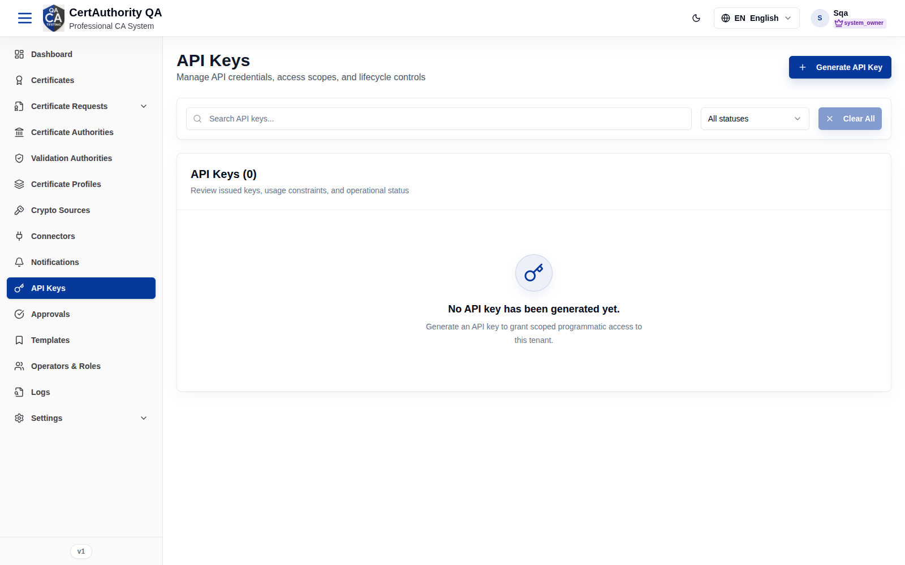
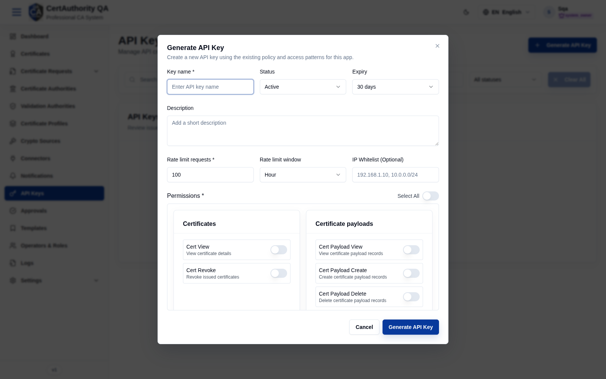

API Keys
Purpose
API Keys grant scoped, programmatic access to the tenant's API. Each key has fine-grained permissions, rate limits, optional IP allow-listing, and an expiry, supporting automation and integrations without operator credentials.
Navigation
API Keys (/key-management)
Overview
- Generate API Key button.
- Search, All statuses filter, Clear All.
- List of issued keys with usage constraints and status (empty state prompts you to generate one).

Fields — Generate API Key dialog

| Field | Description | Required | Notes |
|---|---|---|---|
| Key name | Display name | Yes | — |
| Status | Active / Inactive | No | Defaults to Active |
| Expiry | Lifetime (e.g. 30 days) | No | — |
| Description | Optional note | No | — |
| Rate limit requests | Max requests per window | Yes | Defaults to 100 |
| Rate limit window | Minute / Hour / … | No | Defaults to Hour |
| IP Whitelist | Allowed IPs/CIDRs | No | e.g. 192.168.1.10, 10.0.0.0/24 |
| Permissions | Per-permission switches grouped by resource (+ Select All) | Yes | See catalog below |
Permission catalog (assignable scopes)
Grouped exactly as shown in the dialog:
- Certificates: Cert View, Cert Revoke
- Certificate payloads: View, Create, Delete
- Certificate authorities: Ca View, Ca Configure, Ca Key Ceremony, Ca Crl Manage
- Validation authorities: Va View, Va Configure
- Crypto tokens: Token View, Token Manage, Token Delete
- Crypto sources: View, Create, Delete
- Templates: View, Create, Edit, Delete
- Profiles: View, Create, Edit, Delete
- Certificate requests: View, Create, Issue, Keypair
- Connectors: View, Create, Edit, Delete
- Notifications: View, Create, Edit, Delete
- Approvals: View, Approve, Reject
- Audit: View, Create, Delete
- Access logs: View
- SIEM: Read, Manage
- General settings: View, Edit
- Roles: Role View, Role Manage, Role Member View, Role Member Manage
- Operators: View, Create, Edit, Delete
Actions
- Generate API Key — create a key (secret shown once).
- Reveal / Rotate / Revoke / Delete — lifecycle actions on existing keys (per permissions).
Step-by-Step — Generate an API key
- Open API Keys.
- Click Generate API Key.
- Enter Key name, set Expiry, Rate limit, optional IP Whitelist.
- Toggle the required Permissions (or Select All).
- Click Generate API Key and copy the secret immediately.
Expected Result
The key is created and listed; the secret is displayed once at creation and cannot be retrieved later (rotate to get a new secret).
Notes
- Warning: the secret is shown only once — store it securely.
- Grant the minimum permissions needed; use IP Whitelist and short Expiry for tighter control.
- Every key is bound to this tenant only.